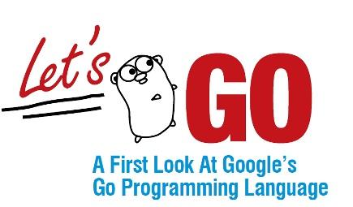

This is a PPT shared by Sameer Ajmani, Technical Lead Manager of Google's Go team, prepared for Java programmers to quickly get started with Go.

Video
This PPT was used on April 23, 2015 atNYJavaSIGused in.
Go to YouTube to watch the video
Main Contents
1. What is Go, and who uses Go?
2. Comparing Go and Java
3. Code examples
4. Concurrency
5. Tools
What is Go?
"Go is an open source programming language that makes it easy to build simple, reliable, and efficient software."
History of Go
Design started in the second half of 2007
- Robert Griesemer, Rob Pike, and Ken Thompson.
- Ian Lance Taylor and Russ Cox
Open-sourced since 2009, with a very active community.
The stable version Go 1 was released in early 2012.
Why Go?
Go is a solution to Google's scale.
System scale
- Scale planned for 10⁶⁺ machines
- Jobs run on thousands of machines every day
- Collaborates and interacts with other jobs in the system
- A lot of work happening at the same time
Solution: very strong support for concurrency
Second problem: engineering scale
In 2011
- 5000+ developers across 40+ offices
- 20+ changes per minute
- 50% of the code base is modified each month
- 50 million test cases executed per day
- A single code tree
Solution: a language designed for large code bases
Who uses Go at Google?
Many projects, thousands of Go programmers, and millions of lines of Go code.
Public examples:
- Chrome SPDY proxy for mobile devices
- Download servers for Chrome, ChromeOS, Android SDK, Earth, etc.
- YouTube Vitess MySQL balancer
Its main tasks are web servers, but it is a general-purpose language.
Who else uses Go besides Google?
Apcera, Bitbucket, bitly, Canonical, CloudFlare, Core OS, Digital Ocean, Docker, Dropbox, Facebook, Getty Images, GitHub, Heroku, Iron.io, Kubernetes, Medium, MongoDB services, Mozilla services, New York Times, pool.ntp.org, Secret, SmugMug, SoundCloud, Stripe, Square, Thomson Reuters, Tumblr, ...
Comparing Go and Java
Go and Java have a lot in common
- C family (strongly typed, braces)
- Static typing
- Garbage collection
- Memory safety (nil references, runtime bounds checks)
- Variables are always initialized (zero/nil/false)
- Methods
- Interfaces
- Type assertions (instances)
- Reflection
Differences between Go and Java
- Programs are compiled directly to machine code, no VM
- Statically linked binaries
- Memory layout control
- Function values and lexical closures
- Built-in strings (UTF-8)
- Built-in generic maps and arrays/slices
- Built-in concurrency
Go deliberately leaves out a number of features
- No classes
- No constructors
- No inheritance
- No final
- No exceptions
- No annotations
- No user-defined generics
Why does Go omit those features?
Clarity of code is paramount
When reading code, you can clearly know what the program will do
When writing code, you can also clearly make the program do what you want
Sometimes this means writing a loop instead of calling an obscure function.
(Don't get too boring)
For detailed design background, see:
- Less is exponentially more (Pike, 2012)
- Go at Google: Language Design in the Service of Software Engineering (Pike, 2012)
Examples
Java programmers should find Go familiar
Main.java
public class Main {
public static void main(String[] args) {
System.out.println("Hello, world!");
}
}
hello.go
package main
import "fmt"
func main() {
fmt.Println("Hello, 世界!")
}
Hello, web server
package main
import (
"fmt"
"log"
"net/http"
)
func main() {
http.HandleFunc("/hello", handleHello)
fmt.Println("serving on http://localhost:7777/hello")
log.Fatal(http.ListenAndServe("localhost:7777", nil))
}
func handleHello(w http.ResponseWriter, req *http.Request) {
log.Println("serving", req.URL)
fmt.Fprintln(w, "Hello, 世界!")
}
(Access) type is declared based on the variable name.
Public variable names begin with a capital letter, private variables begin with a lowercase letter.
Example: GoogleFrontend
func main() {
http.HandleFunc("/search", handleSearch)
fmt.Println("serving on http://localhost:8080/search")
log.Fatal(http.ListenAndServe("localhost:8080", nil))
}
// handleSearch handles URLs like "/search?q=golang" by running a
// Google search for "golang" and writing the results as HTML to w.
func handleSearch(w http.ResponseWriter, req *http.Request) {
Request validation
func handleSearch(w http.ResponseWriter, req *http.Request) {
log.Println("serving", req.URL)
// Check the search query.
query := req.FormValue("q")
if query == "" {
http.Error(w, `missing "q" URL parameter`, http.StatusBadRequest)
return
}
FormValue is a method on *http.Request:
package http
type Request struct {...}
func (r *Request) FormValue(key string) string {...}
`query := req.FormValue("q")` initializes variable query, whose type is the result of the expression on the right, here the string type.
Fetch search results
// Run the Google search.
start := time.Now()
results, err := Search(query)
elapsed := time.Since(start)
if err != nil {
http.Error(w, err.Error(), http.StatusInternalServerError)
return
}
The Search method returns two values: results and error.
func Search(query string) ([]Result, error) {...}
When the value of error is nil, results are valid.
type error interface {
Error() string // a useful human-readable error message
}
The Error type may contain additional information, which can be accessed through type assertion.
Render search results
// Render the results.
type templateData struct {
Results []Result
Elapsed time.Duration
}
if err := resultsTemplate.Execute(w, templateData{
Results: results,
Elapsed: elapsed,
}); err != nil {
log.Print(err)
return
}
The results use Template.Execute to generate HTML and write to an io.Writer:
type Writer interface {
Write(p []byte) (n int, err error)
}
http.ResponseWriter implements the io.Writer interface.
Go variables manipulate HTML templates
// A Result contains the title and URL of a search result.
type Result struct {
Title, URL string
}
var resultsTemplate = template.Must(template.New("results").Parse(`
<html>
<head/>
<body>
<ol>
{{range .Results}}
<li>{{.Title}} - <a href="{{.URL}}.html">{{.URL}}</a></li>
{{end}}
</ol>
<p>{{len .Results}} results in {{.Elapsed}}</p>
</body>
</html>
`))
Request the Google Search API
func Search(query string) ([]Result, error) {
// Prepare the Google Search API request.
u, err := url.Parse("https://ajax.googleapis.com/ajax/services/search/web?v=1.0")
if err != nil {
return nil, err
}
q := u.Query()
q.Set("q", query)
u.RawQuery = q.Encode()
// Issue the HTTP request and handle the response.
resp, err := http.Get(u.String())
if err != nil {
return nil, err
}
defer resp.Body.Close()
The defer statement causes resp.Body.Close to run when the Search method returns.
Parse returned JSON data into Go struct types
developers.google.com/web-search/docs/#fonje
var jsonResponse struct {
ResponseData struct {
Results []struct {
TitleNoFormatting, URL string
}
}
}
if err := json.NewDecoder(resp.Body).Decode(&jsonResponse); err != nil {
return nil, err
}
// Extract the Results from jsonResponse and return them.
var results []Result
for _, r := range jsonResponse.ResponseData.Results {
results = append(results, Result{Title: r.TitleNoFormatting, URL: r.URL})
}
return results, nil
}
That's the frontend for it
All referenced packages come from the standard library:
import (
"encoding/json"
"fmt"
"html/template"
"log"
"net/http"
"net/url"
"time"
)
Go server scalability: each request runs in its own goroutine.
Let's talk about concurrency.
Communicating Sequential Processes (Hoare, 1978)
Concurrent programs as independent processes, executing sequentially through message communication.
Sequential execution is easy to understand; asynchronous is not.
"Don't communicate by sharing memory; share memory by communicating."
Go principles:goroutines, channels, and select statements.
Goroutines
Goroutines are like lightweight threads.
They use smallstacks (tiny stacks) and run with on-demand adjustment.
Go programs can have thousands upon thousands of（goroutines）instances.
Use the go statement to start a goroutine:
go f(args)
The Go runtime places goroutines into OS threads.
Don't use threads to block goroutines.
Channels
Channels are designed for communication between goroutines.
c := make(chan string) // goroutine 1 c <- "hello!" // goroutine 2 s := <-c fmt.Println(s) // "hello!"
Select
The select statement declares a block to determine execution.
select {
case n := <-in:
fmt.Println("received", n)
case out <- v:
fmt.Println("sent", v)
}
Only the case block whose condition is true will run.
Example: Google Search (backend)
Q: What can Google Search do?
A: Ask a question, and it returns a page of search results (and some ads).
Q: How do we get these search results?
A: Send a query to web search, image search, YouTube (video), maps, news, wait, and then retrieve the results.
How should we implement it?
Google Search: a fake framework
We'll simulate a search function that randomly times out in 0 to 100 milliseconds.
var (
Web = fakeSearch("web")
Image = fakeSearch("image")
Video = fakeSearch("video")
)
type Search func(query string) Result
func fakeSearch(kind string) Search {
return func(query string) Result {
time.Sleep(time.Duration(rand.Intn(100)) * time.Millisecond)
return Result(fmt.Sprintf("%s result for %q\n", kind, query))
}
}
Google Search: test framework
func main() {
start := time.Now()
results := Google("golang")
elapsed := time.Since(start)
fmt.Println(results)
fmt.Println(elapsed)
}
Google Search (serial)
The Google function takes a query and returns a result set (not necessarily strings).
Google calls Web, Image, and Video in sequence and adds the results to the result set.
func Google(query string) (results []Result) {
results = append(results, Web(query))
results = append(results, Image(query))
results = append(results, Video(query))
return
}
Google Search (parallel)
Run Web, Image, and Video searches concurrently, and wait for all results.
The func method is closed over query and c.
func Google(query string) (results []Result) {
c := make(chan Result)
go func() { c <- Web(query) }()
go func() { c <- Image(query) }()
go func() { c <- Video(query) }()
for i := 0; i < 3; i++ {
result := <-c
results = append(results, result)
}
return
}
Google Search (timeout)
Wait for slow servers.
No locks, no condition variables, no return values.
c := make(chan Result, 3)
go func() { c <- Web(query) }()
go func() { c <- Image(query) }()
go func() { c <- Video(query) }()
timeout := time.After(80 * time.Millisecond)
for i := 0; i < 3; i++ {
select {
case result := <-c:
results = append(results, result)
case <-timeout:
fmt.Println("timed out")
return
}
}
return
Avoiding timeout
Q: How do we prevent losing results from slow services?
A: Replicate the service, send requests to multiple replicated services, and use the result from the first response.
func First(query string, replicas ...Search) Result {
c := make(chan Result, len(replicas))
searchReplica := func(i int) { c <- replicas[i](query) }
for i := range replicas {
go searchReplica(i)
}
return <-c
}
Using the First function
func main() {
start := time.Now()
result := First("golang",
fakeSearch("replica 1"),
fakeSearch("replica 2"))
elapsed := time.Since(start)
fmt.Println(result)
fmt.Println(elapsed)
}
Google Search (replication)
Use replicated services to reduce excess latency.
c := make(chan Result, 3)
go func() { c <- First(query, Web1, Web2) }()
go func() { c <- First(query, Image1, Image2) }()
go func() { c <- First(query, Video1, Video2) }()
timeout := time.After(80 * time.Millisecond)
for i := 0; i < 3; i++ {
select {
case result := <-c:
results = append(results, result)
case <-timeout:
fmt.Println("timed out")
return
}
}
return
Other
No locks, no condition variables, no calls.
Summary
With a few simple transformations, we use Go's concurrency primitives to turn a
- 慢
- sequential
- failure-sensitive
program into a
- 快
- concurrent
- reusable
- robust
Tools
Go has many powerful tools
- gofmt and goimports
- The go tool
- godoc
- IDE and editor support
The language is designed for the toolchain.
gofmt and goimports
Gofmt can automatically format code, with no options.
Goimports updates import declarations based on your workspace.
Most people can safely use these tools.
The go tool
The go tool can build Go programs from source in a conventional directory layout. No Makefiles or other configuration needed.
Fetch these tools and their dependencies, then build and install:
% go get golang.org/x/tools/cmd/present
Run:
% present
godoc
Generate documentation for all open-source Go code in the world:
IDE and editor support
Eclipse, IntelliJ, emacs, vim, etc.:
- gofmt
- goimports
- godoclookups
- code completion
- code navigation
But there is no "Go IDE".
Go tools are everywhere.
Go's next steps
View the Go roadmap online.
A wealth of learning resources.
A great community.
Thank you
Sameer Ajmani
Tech Lead Manager, Go team
Click me to share notes
<p style="font-size:14px;">The note must be an extension of this article's content!</p><br> <p style="font-size:12px;"><a href="../tougao.html" target="_blank">Submit an article, click here</a></p> <p style="font-size:14px;"><a href="./runoob-user-test-intro.html" target="_blank">How to get a registration invitation code</a></p> <h3 class="text-muted"><i class="fa fa-info-circle" aria-hidden="true"></i> Before sharing notes, you must <a href=".." class="runoob-pop">log in</a>!</h3> <p><a href="./runoob-user-test-intro.html" target="_blank">How to get a registration invitation code</a></p>